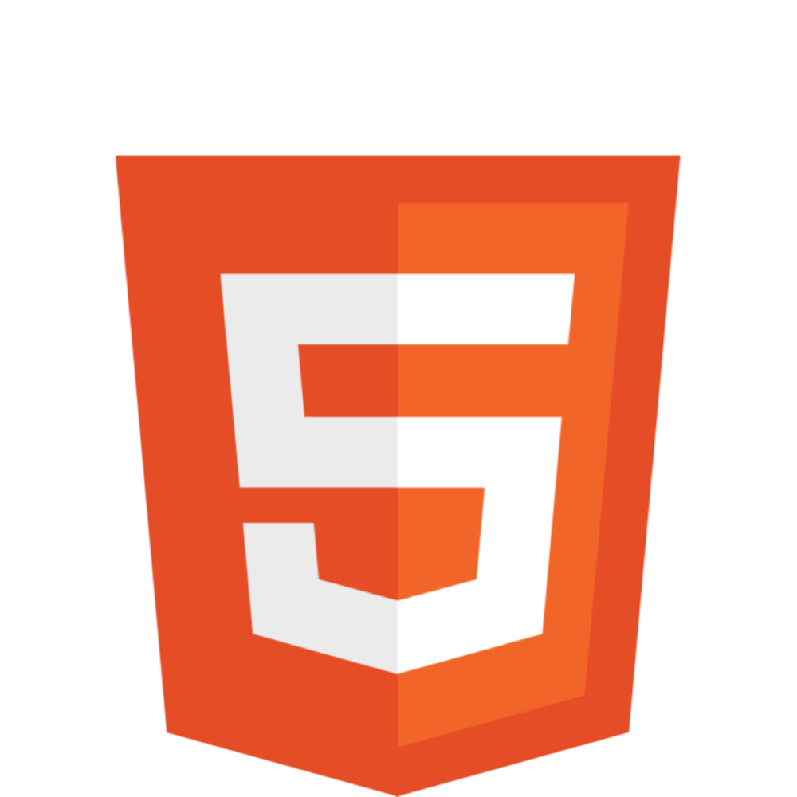
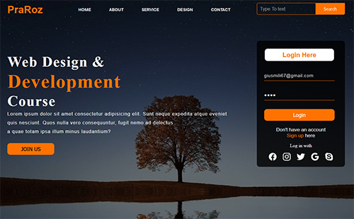

A propos de moi
Je m'appelle Bastien Usubelli, j'ai 20 ans.
Suite à l'obtention de mon baccalauréat général avec comme spécialités Mathématiques et Anglais,
j'ai décidé de commencer des études dans le développement informatique.
Depuis mon stage de découverte en année de troisième, j'ai été particulièrement intéressé par ce domaine, ce qui m'a
convaincu à me diriger vers une formation de BTS SIO SLAM et m'a amené à rentrer à l'école ITIC Paris.
Durant mes années de lycée, j'ai appris les bases du langage python en autodidacte à l'aide de tutos et d'exercices en ligne.
Au cours de ces deux années à l'école ITIC Paris, j'ai réalisé ce portfolio dans l'objectif de lister les principaux projets
traités lors de cette formation, ainsi que lors de mes deux stages en entreprise.
Etudes
| 09/2021 | Année de terminale générale spécialités Mathématiques et LLCE Anglais avec l'option Euro-Espagnol | |||
| 07/2022 |

|
|||
| 09/2022 | Première année de BTS SIO SLAM à l'école ITIC Paris de Septembre 2022 à Juin 2023. | |||
| 07/2022 | Stage de six semaines en entreprise du 15 Mai 2023 au 23 Juin 2023 chez EssilorLuxottica | |||
| 09/2023 | Seconde année de BTS SIO SLAM à l'école ITIC Paris de Septembre 2023 à Juin 2024. | |||
| 11/2023 | Stage de six semaines en entreprise du 06 Novembre 2023 au 20 Décembre 2023 chez EssilorLuxottica | |||
Compétences


|
Mes projets

Projet de Professionnalisation frontend |

Projets vus en cours |

Projet de Professionnalisation Java |
Mes projets de stage en entreprise

Stage de première année |

Stage de deuxième année |
Stage de deuxième année |